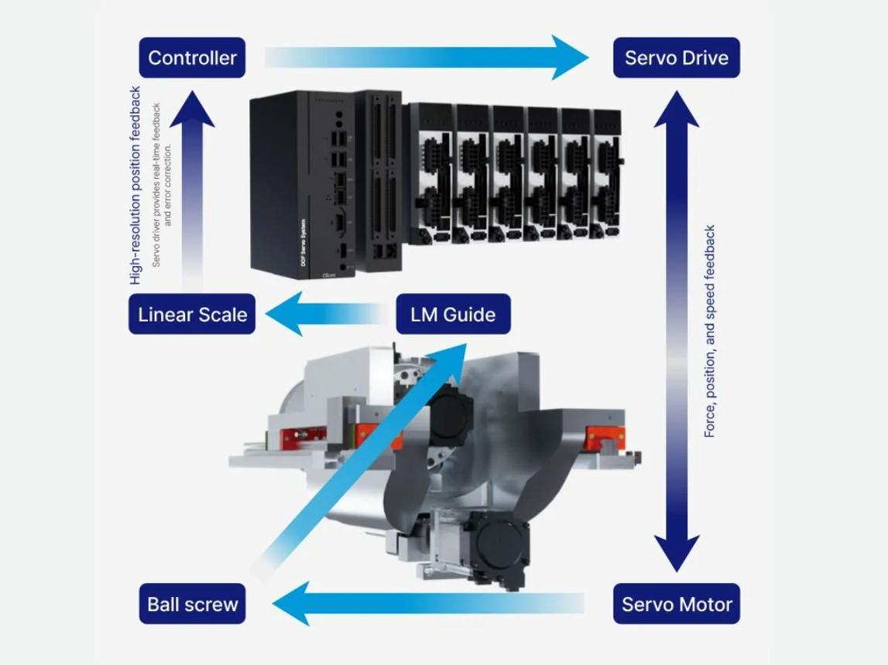
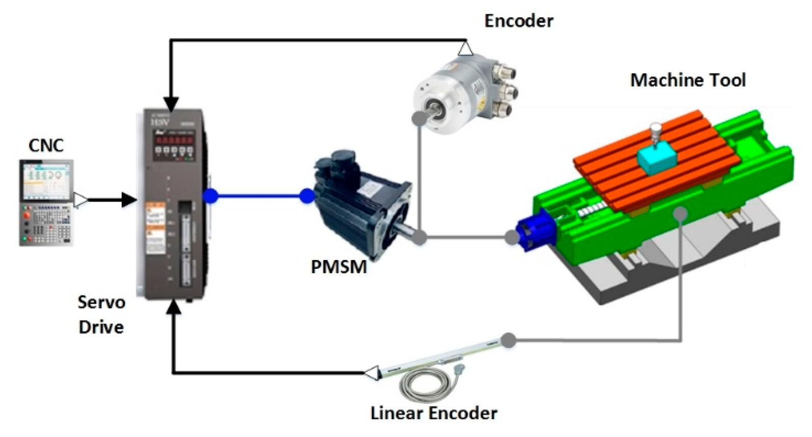
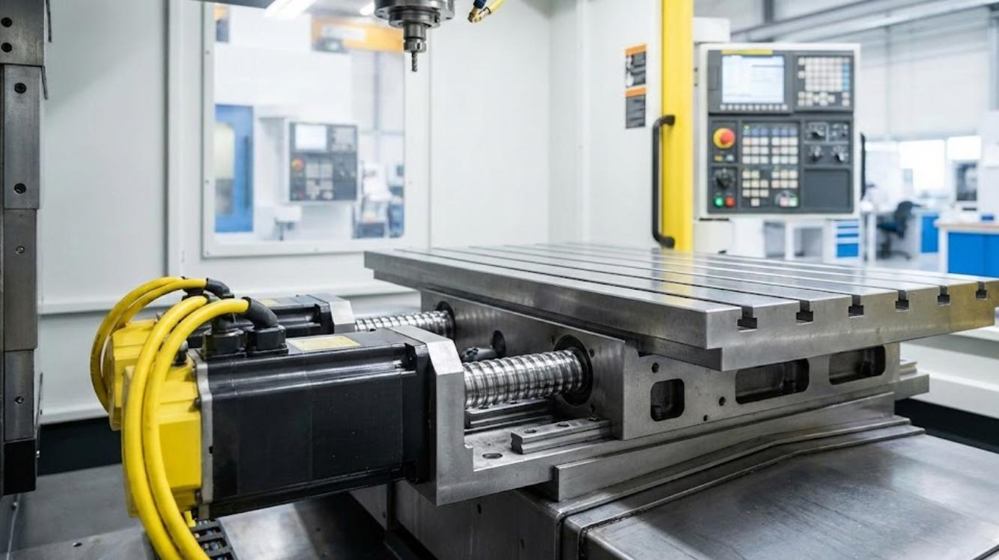
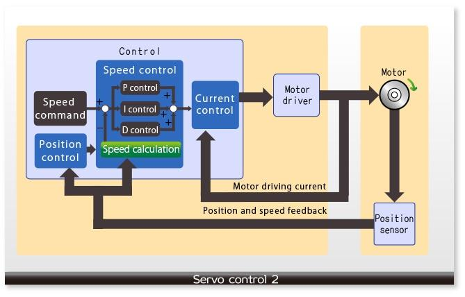
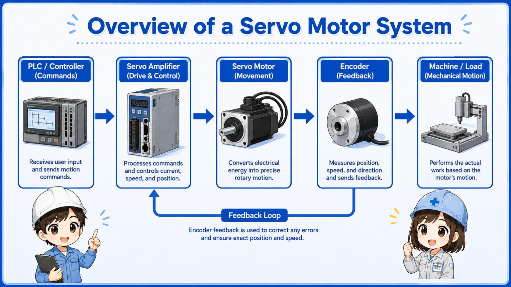
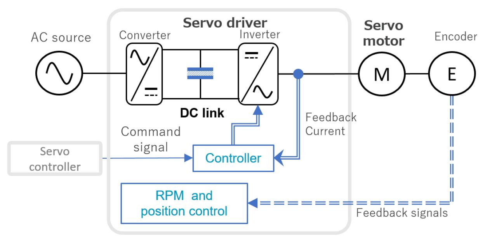

03_Servo - Servo
1. Definition and purpose of a CNC servo system
A CNC servo system is a closed-loop motion-control system that moves a machine axis to a commanded position, speed or trajectory using feedback.
In a CNC machine, servo systems commonly control the X, Y and Z axes, rotary axes, tool-changing mechanisms and other precision movements, depending on the machine design.
A servo system typically includes:
- CNC controller or motion controller.
- Servo amplifier or servo drive.
- Servo motor.
- Position feedback device, such as an encoder.
- Mechanical transmission, such as a ball screw, coupling or gearbox.
- Feedback and control connections.
- Power supply and associated protection.
The key characteristic is feedback-based control. The controller compares the commanded movement with measured movement and adjusts the motor's operation to reduce the difference.
A conventional motor can rotate continuously when powered. A servo system is designed to control motion precisely according to the application's requirements.
2. CNC servo-system architecture



11
A simplified architecture is:
CNC program
|
v
CNC interpolator
|
v
Position / velocity command
|
v
Servo control loops
|
v
Servo drive / amplifier
|
v
Servo motor
|
v
Coupling / gearbox / ball screw
|
v
Machine axis movement
|
v
Encoder / linear scale feedback
|
+----------> Servo controller
The controller calculates the desired path. The servo system makes the physical axis follow that path as accurately as the machine's mechanics, feedback and control capability allow.
In some CNC architectures, the CNC controller performs most of the motion calculations and sends commands to the drive. In others, the drive performs more of the internal control calculations. The exact division of responsibilities depends on the manufacturer and system architecture.
3. Servo motor versus ordinary induction motor
A servo motor is not defined only by its appearance or by having a particular number of wires. It is part of a system designed for controlled motion, usually with feedback and a suitable drive.
| Feature | Servo motor and drive | Conventional induction motor |
|---|---|---|
| Main purpose | Precise position, speed and torque control | General-purpose rotation |
| Feedback | Commonly uses an encoder or resolver | Often operates without position feedback |
| Positioning | Designed for controlled positioning when configured appropriately | Requires additional control and feedback for precision positioning |
| Dynamic response | Often high, with rapid acceleration and deceleration | Depends on motor and drive design |
| Control complexity | Higher | Usually lower |
| Typical applications | CNC axes, robotics, precision positioning | Pumps, fans, conveyors and other rotating machinery |
| Drive | Servo drive | Direct supply, soft starter or VFD, depending on application |
An induction motor can also be used in closed-loop motion systems when paired with suitable feedback and control equipment. The distinction is the complete motion-control design, not an absolute rule that induction motors cannot provide precise control.
4. Main components of a servo system
4.1 CNC controller
The CNC controller interprets the machining program, coordinates axis movements and calculates the required position trajectory.
It may also manage acceleration, deceleration, interpolation, feed-rate limits and coordination between multiple axes.
4.2 Servo drive
The servo drive converts the controller's commands into electrical power for the motor.
Its functions commonly include:
- Motor current control.
- Torque production control.
- Speed control.
- Position control, depending on the architecture.
- Encoder feedback processing.
- Fault detection and protection.
- Communication with the CNC controller.
The servo drive is also called a servo amplifier in some systems.
4.3 Servo motor
The servo motor converts electrical energy into mechanical torque and rotation.
In a CNC axis, the motor may drive a ball screw directly through a coupling or indirectly through a gearbox or another transmission.
4.4 Encoder or feedback device
The feedback device measures motor position or another controlled quantity.
Common feedback technologies include:
- Incremental encoders.
- Absolute encoders.
- Resolvers.
- Direct linear scales for machine-axis measurement.
The feedback device and its interface must be compatible with the drive and controller.
4.5 Mechanical transmission
The mechanical transmission transfers motor movement to the machine axis.
Examples include ball screws, gearboxes, couplings, rack-and-pinion systems and direct-drive arrangements.
A correctly functioning servo cannot compensate for every mechanical defect. A loose coupling, damaged screw or excessive backlash can produce poor positioning even when the motor and drive appear healthy.
5. Types of servo motors
5.1 Permanent-magnet AC servo motor
Permanent-magnet AC servo motors are widely used in modern CNC machines and industrial motion systems.
Typical characteristics:
- Permanent magnets on the rotor.
- Electronic commutation through a suitable servo drive.
- High torque relative to motor size.
- Good dynamic response.
- Encoder or resolver feedback in many designs.
The drive controls the phase currents to generate the required torque and motion.
5.2 Brushless servo motor
A brushless servo motor does not use conventional mechanical brushes and a commutator for motor commutation.
Most modern industrial AC servo motors are brushless designs. They offer low brush-maintenance requirements and are suitable for frequent acceleration and deceleration.
5.3 Brushed DC servo motor
A brushed DC servo motor uses brushes and a mechanical commutator.
It can provide controllable torque and speed, but brush wear and commutator maintenance make it less common in many modern CNC axis applications.
5.4 Linear servo motor
A linear servo motor produces linear force directly rather than converting rotary motor movement through a ball screw or gearbox.
Advantages can include high acceleration and reduced transmission backlash. However, the system still requires appropriate guides, feedback, thermal management and drive configuration.
5.5 Rotary servo motor used for a linear axis
A common CNC arrangement uses a rotary servo motor connected to a ball screw.
The motor rotates, the ball screw converts that rotation into linear travel, and the encoder or linear scale provides feedback.
This is different from a linear motor, which produces linear motion directly.
6. The three main servo control loops
Many CNC servo systems use nested control loops. Their exact implementation varies by drive and controller.



8
6.1 Current or torque loop
The current loop controls motor phase current. In a properly configured motor, current is closely related to electromagnetic torque.
Its purpose is to make the motor produce the torque demanded by the higher-level controller.
For many modern servo drives, this is the fastest of the main control loops.
6.2 Speed loop
The speed loop controls motor velocity using measured or estimated speed feedback.
It compares the commanded speed with the actual speed and adjusts the torque demand accordingly.
The speed loop helps the motor accelerate, decelerate and maintain the required velocity under changing loads.
6.3 Position loop
The position loop compares the target position with the measured position.
It generates a motion correction, commonly expressed through a velocity command or an equivalent internal command, to reduce position error.
A simplified relationship is:
Position command
|
v
Position controller
|
v
Speed command
|
v
Speed controller
|
v
Torque / current command
|
v
Motor and machine mechanics
|
v
Position feedback
The current loop, speed loop and position loop work together. If the loops are configured poorly, the system may exhibit overshoot, vibration, slow settling or following-error alarms.
6.4 Why loop hierarchy matters
A common arrangement is:
- Current loop: fastest response.
- Speed loop: slower than the current loop.
- Position loop: slower than the speed loop.
This hierarchy helps each loop respond without destabilizing the others.
The precise bandwidths and implementation depend on the drive, motor, feedback device and machine mechanics.
7. Position control, speed control and torque control
A servo drive can operate in different control modes.
| Mode | Primary controlled quantity | Typical application |
|---|---|---|
| Position control | Position | CNC axis positioning |
| Speed control | Rotational speed | Controlled-speed applications |
| Torque control | Torque or corresponding current command | Force or torque regulation |
| Combined or coordinated control | Multiple quantities within a motion architecture | CNC interpolation and specialized motion systems |
7.1 Position control
The drive or motion controller attempts to achieve a target position.
For example, a CNC axis may be commanded to move from 20 mm to 120 mm. The system controls the motion and feedback to reach the target within configured limits.
7.2 Speed control
The system regulates motor speed around a commanded value.
Speed control is useful when maintaining velocity is more important than directly commanding a target position.
7.3 Torque control
The system regulates torque or motor current corresponding to torque.
This can be useful in tension control, force-limited operations or specialized machine functions. It does not automatically guarantee a particular physical force at the tool because transmission geometry and friction also matter.
7.4 Command source versus control mode
A CNC controller may provide position commands to a servo drive while the drive internally executes position, speed and current loops.
Therefore, the terms position control, speed control and torque control must be interpreted in the context of the complete architecture. A position-controlled CNC axis still relies on speed and torque control internally.
8. Servo feedback systems
Feedback is what allows a servo system to compare intended movement with measured movement.
8.1 Incremental encoder
An incremental encoder produces pulses as the motor rotates. The drive counts pulses to determine relative movement and can derive speed from the signal.
Quadrature encoders commonly provide A and B channels, which allow direction detection. Some also provide a Z or index signal for a reference position.
A limitation is that pulse counting alone does not inherently preserve absolute position after power loss. The system may need a reference procedure unless another mechanism preserves or reconstructs the position.
8.2 Absolute encoder
An absolute encoder reports a position value corresponding to a defined angular position.
Depending on encoder type and system configuration, it can retain or recover position information after power loss. Battery-backed multi-turn systems may require battery maintenance and validation.
An absolute encoder does not eliminate every reference requirement. The machine may still require a reference check, calibration or manufacturer-specific recovery procedure.
8.3 Resolver
A resolver is an electromechanical position sensor that provides angular feedback using electromagnetic signals. Resolver-based systems require compatible drive electronics to interpret the signals.
Resolvers are valued in applications where robust feedback is needed, including some demanding industrial environments.
8.4 Motor encoder versus linear scale
A motor encoder measures motor position. A linear scale measures displacement at its mounting location on the machine axis.
A linear scale can detect certain errors in the mechanical transmission that motor-side feedback may not directly reveal. However, it cannot automatically correct errors outside its measurement path, such as every form of tool geometry error or thermal distortion.
8.5 Feedback failure symptoms
Possible symptoms include:
- Encoder or communication alarms.
- Position values that jump unexpectedly.
- Incorrect direction detection.
- Following-error alarms.
- Unstable speed feedback.
- Loss of reference or absolute position.
- Servo-ready failure.
When investigating a feedback problem, check the drive's actual alarm, connector condition, cable routing, shielding, supply where applicable, feedback compatibility and diagnostic values. Do not assume that every following-error alarm means the encoder is faulty.
9. Servo tuning and dynamic performance
Servo tuning adjusts control parameters so that the system follows commands accurately without excessive vibration or instability.
The main goal is to balance responsiveness, stability, settling time and robustness against changing loads.
9.1 Position-loop gain
Position-loop gain determines how strongly the controller responds to position error.
Higher gain can improve response and reduce tracking error, but excessive gain may cause vibration, overshoot or instability.
9.2 Speed-loop gain
Speed-loop gain determines how strongly the speed controller responds to speed error.
Insufficient gain may produce sluggish response. Excessive gain can cause oscillation or amplify mechanical resonance.
9.3 Inertia ratio
The inertia ratio compares the effective load inertia seen by the motor with the motor's own inertia, using the drive manufacturer's defined convention.
A high load-to-motor inertia ratio can make a system more difficult to control, particularly during rapid acceleration and deceleration.
The correct ratio depends on the transmission, motor sizing, load and application.
9.4 Filters
Servo drives may provide notch filters, low-pass filters and smoothing functions.
- Notch filter: Attenuates a selected frequency range, often to reduce the effect of a mechanical resonance.
- Low-pass filter: Attenuates higher-frequency signal components.
- Command smoothing: Reduces abrupt changes in a motion command.
Filters can improve behaviour when correctly applied, but they may also add delay or conceal the symptoms of a mechanical defect. They should not be used as a substitute for correcting loose couplings, damaged bearings or other physical problems.
9.5 Auto-tuning
Auto-tuning estimates or adjusts control parameters using a drive's built-in procedure.
Depending on the drive, it may require a stationary identification procedure or controlled movement.
Before tuning, verify the machine condition, axis configuration, load, transmission and safety conditions. Use the manufacturer's procedure and preserve the original parameters.
9.6 Motion profile and servo tuning are different
A motion profile defines the commanded movement, including velocity, acceleration and possibly jerk limits.
Servo tuning determines how the control system responds while trying to follow that command.
A poorly selected motion profile can overload an otherwise well-tuned axis. A poorly tuned servo can track even a reasonable profile badly.
10. Torque, speed, inertia and motor sizing
10.1 Torque
Torque is the rotational effort produced by the motor. It determines the ability to accelerate a load or overcome resistance.
A servo motor must provide enough torque for acceleration, friction, gravity where applicable and process forces, while remaining within its continuous and peak ratings.
10.2 Speed
Motor speed must be compatible with the required axis velocity and transmission ratio.
For a ball-screw axis, the relationship between screw speed and linear velocity depends on the screw lead.
Where:
- \(v\) is linear velocity in mm/min.
- \(n\) is screw speed in revolutions/minute.
- \(L\) is screw lead in mm/revolution.
For a screw lead of 10 mm/revolution and a screw speed of 1,500 rpm:
This is the ideal kinematic result. Actual permitted speed may be lower because of motor limits, screw critical speed, drive constraints, load and machine configuration.
10.3 Torque and power
For rotational motion:
Where:
- \(P\) is mechanical power in watts.
- \(T\) is torque in newton-metres.
- \(\omega\) is angular speed in radians per second.
For a given torque, higher speed requires higher mechanical power.
Motor selection must consider the actual duty cycle rather than only a single peak torque or maximum-speed value.
10.4 Continuous torque versus peak torque
- Continuous torque: Torque the motor can deliver within its specified thermal limits under defined conditions.
- Peak torque: Higher torque available for a limited period, subject to the motor and drive specifications.
A machine that repeatedly demands peak torque for too long may overheat or trip.
10.5 Reflected load inertia
The load's effective inertia at the motor depends on the transmission ratio and the connected mechanical system.
A gearbox may reduce the effective load inertia seen by the motor, depending on the ratio and arrangement. However, gearbox losses, backlash, stiffness and speed constraints must also be considered.
Do not select a servo based only on the mass of the workpiece. The complete moving system, transmission, acceleration requirements and duty cycle matter.
11. Regenerative energy and braking
When a servo axis decelerates, the motor may operate as a generator and return energy to the drive's DC bus.
This is called regenerative operation.
The drive must manage the returned energy. Depending on the system, it may:
- Return energy to a common DC bus or supply, where supported.
- Use a braking resistor to dissipate energy.
- Use a regenerative power unit to return energy to the electrical supply.
- Apply another manufacturer-specific energy-management arrangement.
If the system cannot absorb or dissipate the returned energy, the DC-bus voltage may rise and cause an overvoltage alarm.
Common contributors include rapid deceleration, high inertia, repeated stopping cycles and incorrect braking configuration.
Important distinction: A motor's regenerative torque function is not automatically a safety-rated holding brake. Vertical axes and gravity-loaded mechanisms may require a dedicated mechanical brake and a defined safe sequence.
12. Servo alarms and fault diagnosis
| Symptom or alarm | Possible causes | Diagnostic approach |
|---|---|---|
| Servo drive will not become ready | Power supply fault, control-power problem, active alarm, safety condition | Check alarm history, supply status and readiness conditions |
| Motor does not move | Enable missing, command absent, interlock, motor or drive fault | Check command, enable, status and drive diagnostics |
| Overcurrent | Short circuit, motor/cable issue, excessive load, mechanical jam or drive fault | Follow the drive manufacturer's isolation and diagnostic procedure |
| Overload or overtemperature | Excessive duty, high friction, poor cooling, motor undersizing or prolonged peak torque | Check load, cooling, duty cycle and recorded load data |
| DC-bus overvoltage | Regenerative energy, braking configuration issue or supply-related condition | Review deceleration, bus diagnostics and braking hardware |
| Encoder alarm | Feedback cable, connector, encoder, supply or configuration problem | Check diagnostic details and feedback connections according to the manual |
| Following-error alarm | Excessive load, obstruction, tuning, scaling or feedback issue | Compare command and actual position; check drive and mechanics |
| Oscillation or vibration | Poor tuning, resonance, mechanical looseness or unsuitable motion profile | Inspect mechanics first, then investigate tuning under approved conditions |
| Positioning error | Scaling, feedback location, backlash, screw error or calibration | Compare commanded travel with independently measured movement |
| Motor overheats | Excessive RMS load, poor cooling, incorrect sizing or mechanical resistance | Review duty cycle, temperature, load and motor specifications |
| Unexpected direction | Axis mapping, configured direction or feedback interpretation problem | Stop and verify configuration before further movement |
| Brake-release fault | Brake supply, wiring, control sequence or mechanical brake issue | Check brake status and the approved release sequence |
An alarm's exact meaning is manufacturer- and model-specific. Use the actual alarm code and drive manual rather than applying a generic interpretation to every drive.
13. Practical servo troubleshooting workflow
Step 1: Capture evidence
Record the drive model, alarm number, machine state, axis designation, command, actual position, following error and any available current, torque or load-monitor values.
Step 2: Check readiness and command
Determine whether the drive is ready and enabled, whether the CNC is issuing a movement command, and whether the PLC or CNC is blocking movement through an interlock.
Step 3: Separate electrical, control and mechanical causes
- Electrical: Supply, motor cable, feedback cable, connectors, cooling and drive hardware.
- Control: Enable conditions, command values, feedback configuration, scaling, tuning and parameters.
- Mechanical: Obstruction, lubrication, coupling, screw, guides, brake and load.
These categories can overlap. For example, mechanical binding can produce a drive overcurrent or overload alarm.
Step 4: Compare commanded and actual movement
Check whether the motor responds, whether feedback changes in the expected direction and whether the machine axis moves by the expected amount.
Use the appropriate approved diagnostic tools and measurements.
Step 5: Inspect mechanical resistance
Where authorized, inspect the mechanical transmission and load for binding, damage, inadequate lubrication or brake-release problems.
Isolate hazardous energy before mechanical intervention and follow the site's lockout/tagout procedure.
Step 6: Check tuning only when justified
If the mechanics, feedback and configuration are sound, investigate tuning and motion parameters using the manufacturer's method.
Do not randomly increase gain, disable alarms or alter encoder scaling to suppress symptoms.
Step 7: Validate the repair
Verify the drive status, reference, direction, movement, positioning accuracy and performance under the approved test conditions. Record the root cause and final configuration.
14. Servo system safety
Servo axes can generate rapid and powerful movement. A stopped motor is not necessarily a safe machine.
Key precautions:
- Keep guards and interlocks functional.
- Never bypass a limit device or safety function to force movement.
- Remember that jog mode can still produce hazardous movement.
- Treat vertical axes as potential gravity hazards.
- Verify mechanical brake behaviour using the approved procedure.
- Isolate electrical and stored energy before mechanical work.
- Follow lockout/tagout and the manufacturer's maintenance instructions.
- Back up parameters before authorized configuration changes.
- Do not assume that an ordinary servo-disable command is equivalent to a safety-rated Safe Torque Off function.
Safe Torque Off (STO) is a safety function intended to prevent the drive from generating motor torque under its defined conditions. STO does not necessarily isolate electrical power, stop a moving load immediately or hold a gravity-loaded axis mechanically. Additional safeguards may be required.
15. Servo interview questions and answers
Q1. What is a servo system?
A closed-loop motion-control system that controls position, speed or torque using feedback.
Q2. What is the difference between a servo motor and a servo drive?
The motor converts electrical energy into mechanical movement. The drive controls the electrical power supplied to the motor and processes the relevant commands and feedback.
Q3. Why is feedback required in a CNC servo system?
Feedback allows the control system to compare commanded and actual movement, detect deviations and correct motion.
Q4. What are the three main servo control loops?
The current or torque loop, speed loop and position loop.
Q5. Which control loop is generally the fastest?
The current loop is generally the fastest, followed by the speed loop and then the position loop in a conventional nested-loop arrangement.
Q6. What is the difference between an incremental and an absolute encoder?
An incremental encoder measures relative movement through pulses. An absolute encoder provides a position value corresponding to a defined position, subject to its design and configuration.
Q7. What causes a following-error alarm?
Excessive deviation between commanded and measured position. Causes can include overload, mechanical obstruction, tuning problems, feedback faults or incorrect scaling.
Q8. What happens when servo gain is too high?
The system may become oscillatory, overshoot the target or amplify mechanical resonance. Excessive gain can destabilize the system.
Q9. What is inertia ratio?
It compares the effective load inertia seen by the motor with the motor's inertia, according to the manufacturer's convention. It helps assess how difficult the load may be to control.
Q10. Why does a servo motor overheat?
Possible causes include excessive continuous load, frequent high-torque operation, poor cooling, excessive friction, incorrect sizing or a motor/drive configuration problem.
Q11. Why can a servo drive trip on overvoltage during deceleration?
The motor may regenerate energy into the DC bus. If the system cannot absorb or dissipate that energy, the bus voltage may rise above its permitted limit.
Q12. What is auto-tuning?
A drive-supported procedure that estimates or adjusts control parameters to improve motion response. Its method and requirements depend on the drive.
Q13. What is the difference between servo tuning and motion profiling?
Motion profiling defines the desired trajectory and its dynamics. Servo tuning defines how the control system responds to follow that trajectory.
Q14. Can a servo motor hold a vertical axis safely without a mechanical brake?
Not necessarily. The suitability of a brake-free arrangement depends on the mechanical system and risk assessment. A vertical axis may require a holding brake and other safeguards to prevent falling.
Q15. What is regenerative braking?
A condition in which a motor converts mechanical energy into electrical energy during deceleration or an overhauling load condition.
Q16. Why can the motor position be correct while the CNC axis position is wrong?
The encoder may measure motor rotation rather than actual linear displacement. Backlash, screw errors, compliance, thermal expansion and mechanical defects can affect the resulting axis position.
Q17. What is STO?
Safe Torque Off is a safety function intended to prevent torque generation by the drive under specified conditions. It is not automatically equivalent to electrical isolation or mechanical holding.
Q18. Why should servo parameters be backed up before tuning?
A backup preserves the original configuration, supports recovery and allows authorized changes to be traced and compared.
Q19. Can an induction motor be used in a servo system?
Yes, with suitable feedback and a compatible motion-control drive. Whether it is appropriate depends on the required precision, dynamic performance and application.
Q20. What is the first step when diagnosing a servo alarm?
Record the exact alarm code and machine condition, then consult the relevant drive documentation and inspect the available status and diagnostic values before changing parameters.
16. Practical exercises
Exercise 1: Servo drive is ready but the axis does not move
Prepare a diagnostic sequence that checks the CNC command, enable conditions, interlocks, drive status, feedback and mechanical transmission.
Exercise 2: Following-error alarm occurs during acceleration
Investigate the commanded acceleration, actual feedback, load, mechanical resistance, tuning and drive limitations. Determine which measurements would distinguish between these causes.
Exercise 3: Motor overheats during production
Record the duty cycle, load-monitor values, cooling condition, mechanical resistance and motor/drive ratings. Distinguish excessive continuous load from an intermittent peak-torque demand.
Exercise 4: DC-bus overvoltage occurs during rapid stopping
Inspect the deceleration profile, inertia, braking resistor or regenerative unit, relevant wiring and drive diagnostics. Verify the installed energy-management arrangement before changing settings.
Exercise 5: Positioning accuracy deteriorates
Compare commanded and independently measured travel. Check feedback architecture, axis scaling, coupling, ball screw, backlash and thermal effects.
Exercise 6: Prepare a servo maintenance record
Create a record containing:
- Machine and axis identification.
- Servo motor and drive model.
- Feedback type and configuration.
- Relevant alarms and diagnostic values.
- Motor temperature and load observations.
- Mechanical inspection findings.
- Parameter backup and authorized changes.
- Root cause, corrective action and validation results.
17. Final mental model
CNC decides where the axis should go
|
v
Servo controller determines the correction
|
v
Servo drive supplies controlled electrical power
|
v
Servo motor generates torque
|
v
Mechanical system moves the axis
|
v
Feedback reports the measured result
|
+----> Controller corrects the error
The essential distinctions are:
- CNC controller: Coordinates the intended machining movement.
- Servo drive: Controls motor power and executes its configured control functions.
- Servo motor: Produces mechanical torque and rotation.
- Encoder or scale: Measures position or movement.
- Servo tuning: Determines the dynamic response of the control system.
- Mechanical transmission: Determines how motor movement reaches the machine axis.
- Safety functions: Manage hazardous motion according to the machine's safety design.
When a servo axis fails, diagnose the command, control status, electrical system, feedback, tuning and mechanical load as separate but interconnected layers.
Next topic:
02_PLAN_WISE_2026\02_INDUSTRY3_0\02_Auto_Tech\07_CNC\04_Spindle
04_Spindle - Spindle